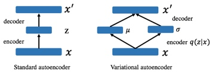
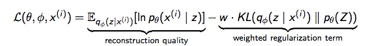
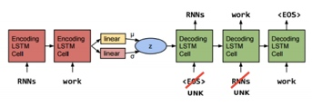
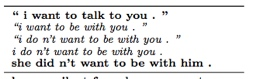
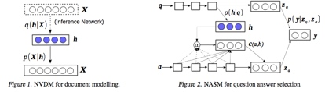
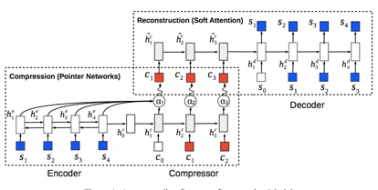
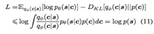
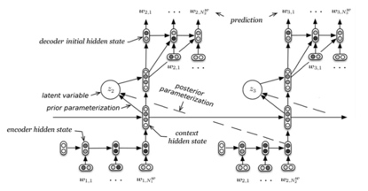

PaperWeekly第二十七期
提及 Generative Models，Variational Autoencoder(VAE) 和 GAN 可以说是两座大山头。上上期的《 GAN for NLP》 一文中对 GAN 在 NLP 中的进展做了详细的介绍，推荐错过的朋友不要再错过。虽然 GAN 在图像生成上效果显著（当然 VAE 也很强），但在 NLP 方面暂时还是 VAE 较为work。今天的分享作为姊妹篇（捂脸），对 VAE 在 NLP 的应用里选取几篇最具有代表性的 paper 进行介绍。我会尽量梳理论文之间的联系，希望对大家有所帮助。本期涉及的论文有：
- 《Generating Sentences From a Continuous Spaces》. ICLR 2016
- 《Neural Variational Inference for Text Processing》. ICML 2016
- 《Language as a Latent Variable: Discrete Generative Models for Sentence Compression》. EMNLP 2016
- 《A Hierarchical Latent Variable Encoder-Decoder Model for Generating Dialogues》. AAAI 2017
- 其他

在展开之前，我先带大家简单回顾一下 VAE 的核心。
1) 如上图所示，VAE 可以看做是 Standard autoencoder 的 regularized version（在 autoencoder 的架构上引入随机 latent variable ）。
2) VAE 从 data 学到的是在 latent space 的 region，而不是单个点。换句话说是 encode 学到了一个概率分布 q(z|x)。
3) 引入 KL divergence 让后验 q(z|x) 接近先验 p(z)。这里的 motivation 在于如果仅用 reconstruction loss，q(z|x) 的 variances 还是会很小（又和原有的单个点差不多了）。
VAE 详细推导这里就不展开，各种 tutorial 也非常多。只要掌握变分推断和理解 reparametrization trick 就基本 ok 了。
下面进入正题。
- Generating Sentences From a Continuous Spaces
论文链接: https://aclweb.org/anthology/K/K16/K16-1002.pdf
这篇文章对后面很多 paper 影响很大而且我也很喜欢，所以重点介绍一下。paper 最早发表在 ICLR 2016 上，motivation 在于作者为了弥补传统的 RNNLM 结构缺少的一些 global feature（其实可以理解为想要 sentence representation）。其实抛开 generative model，之前也有一些比较成功的 non-generative 的方法，比如 sequence autoencoders[1]，skip-thought[2] 和 paragraph vector[3]。但随着 VAE 的加入，generative model 也开始在文本上有更多的可能性。

Loss 的组成还是和 VAE 一样。具体模型上，encoder 和 decoder 都采用单层的 LSTM，decoder 可以看做是特殊的 RNNLM，其 initial state 是这个 hidden code z（latent variable），z 采样自 Gaussian 分布 G，G 的参数由 encoder 后面加的一层 linear layer 得到。这里的 z 就是作者想要的 global latent sentence representation，被赋予了先验diagonal Gaussians，同时 G 就是学到的后验。
模型很简单，但实际训练时有一个很严重的问题：KL 会迅速降到0，后验失效了。原因在于，由于 RNN-based 的 decoder 有着非常强的 modeling power，直接导致即使依赖很少的 history 信息也可以让 reconstruction errors 降得很低，换句话说，decoder 不依赖 encoder 提供的这个 z 了，模型等同于退化成 RNNLM（摊手）。顺便一提，本文最后有一篇 paper 也是为了解决这个问题。
先看这篇 paper 提出的解决方法：KL cost annealing 和 Word dropout。
1) KL cost annealing

作者引入一个权重 w 来控制这个 KL 项，并让 w 从 0 开始随着训练逐渐慢慢增大。作者的意思是一开始让模型学会 encode 更多信息到 z 里，然后随着 w 增大再 smooth encodings。其实从工程/代码的角度看，因为 KL 这项更容易降低，模型会优先去优化 KL，于是 KL 很快就降成 0。但如果我们乘以一开始很小的 w，模型就会选择忽视 KL（这项整体很小不用降低了），选择优先去降低 reconstruction errors。当 w 慢慢增大，模型也慢慢开始关注降低 KL 这项了。这个技巧在调参中其实也非常实用。
2) Word dropout

既然问题是 RNN-based 的 decoder 能力太强，那我们就来弱化它好了。具体方法是把 input 的词替换成 UNK（我可能是个假的 decoder），模型被迫只能去多多依赖 z。当然保留多少 input 也需要尝试，我们把全都不保留的叫做inputless decoder，实验表明，inputless VAE 比起 inputless RNN language model 不知道好到哪里去了。
受到 GAN 的启发，作者还提出了一个 Adversarial evaluation，用一半真一半假的数据作为样本训练出一个分类器，再对比不同模型生成的句子有多少能骗过这个分类器，这个 evaluation 被用在 Imputing missing words 这个任务上，VAE 的表现同样比 RNNLM 出色。
最后，作者展示模型的确学到了平滑的 sentence representation。选取两个sentence 的code z1和z2，z1 和 z2 可以看做向量空间的两个点，这两个点连线之间的点对应的句子也都符合语法且 high-level 的信息也保持局部一致。

- Neural Variational Inference for Text Processing
论文链接：https://arxiv.org/pdf/1511.06038.pdf
其实这篇 paper 和第一篇是一起投的 ICLR，后来转投了 ICML 2016，所以时间上其实和第一篇是一样的（两篇文章也有互相引用）。不同于第一篇，作者的出发点是构建一个 generative neural variational framework。为了证明 framework 的优越性，分别在 unsupervised 和 supervised 的任务上提出了两个模型，结果也很令人满意。

第一个任务是 unsupervised document modeling，模型叫 Neural Variational Document Model（NVDM）。h 和第一篇的 z 一样，在这里代表 latent document semantics，但 document 是以 bag-of-words 的形式（个人以为这里作者主要还是受到 LDA 的影响）。encoder 采用 MLP, decoder 是一层 softmax。
第二个任务是 supervised answer selection，模型叫 Neural Answer Selection Model（NASM）。文本的建模方式采用 LSTM（在第二个任务用 LSTM，第一个任务用词袋，可能为了证明普适性）。h 代表 latent question semantics。如上图所示，Zq 和 Za 用来表示 question 和 answer，y 代表 answer 是不是正确答案，用 Zq 和 Za 预测 y。那么 Zq 和 Za 是怎么得到的呢？ Zq 延用 LSTM 的 last state，而 Za 则较为复杂，所谓脱离问题谈答案都是耍流氓，所以对 Za 建模时要显式的放入 question的信息。可这里该怎么表示 question 呢？如果还用 Zq，模型很容易 overfitting。这里我们的 latent h 终于可以出场了，引入 h 不仅起到了 muti-modal 的效果，还让模型更 robust，再把基于 attention 的 c(a,h) 和 answer 的 LSTM last state 组和得到 Za。这种做法对我们在寻找 representation 时有很好的借鉴作用。最后通过推导 variational lower bound 确定 h 的先验是 p(h|q)（第一个任务中先验是 p(h)）, 这里就不赘述了。
- Language as a Latent Variable: Discrete Generative Models for Sentence Compression
论文链接：https://arxiv.org/pdf/1609.07317v1.pdf
这篇 paper 发表在 EMNLP 2016，同样出自第二篇 paper 的作者。传统的 VAE 是把数据 encode 成 continuous latent variable，这篇 paper 的贡献在于提出了一个 generative model 用来学到 language 的 discrete representation——一个带有 sequential discrete latent variable 的 VAE。所谓的 discrete latent variable 就是指一个单词，加上 sequential 其实就是一个句子，由于 VAE 本身是压缩数据的，换句话说是用短一点的句子来表示原来的句子，也就是句子压缩。我觉得作者的 intuition 在于每个句子可以有多个缩写，且都可以表示原句，有一点点 distribution 的意思，所以用 latent variable 很合适。

原句和压缩句分别是 s 和 c ，模型整体是 encoder -> compressor -> decoder。我们分解开看，encoder -> compressor 采用 pointer network[4] 只从 s 里选取合适的词而不是整个词典，从而大大减少了 search space。compressor -> decoder 是一个带 soft attention 的 seq2seq。这个模型的好处是不需要 label 数据，但是如果我们有足够的 label 数据（真实数据里 c 里的词可不仅仅来自 s），需要额外加个 softmax 从整个词典里选词，同时再定义一个 latent factor判断是从 s（pointer network）还是从词典里选，更加符合任务需求。

值得一提的是 Variational lower bound 里的 p(c) 是 pre-train 好的 language model。因为 Language model 的一个特点是比较喜欢短句子，很适合句子压缩的场景。由于 reparameterisation trick 并不适用 discrete latent variable，作者还采用了 REINFORCE[5] 的方法（凡是 discrete 的问题，GAN/VAE 都可以采用 REINFORCE）。
- A Hierarchical Latent Variable Encoder-Decoder Model for Generating Dialogues
论文链接：https://arxiv.org/pdf/1605.06069.pdf
这是第一篇把 VAE 的思想引入到 dialogue 的 paper。和普通的 VAE 区别在于 dialogue 的 reconstruction 是生成的下一句 utterance，而不是 input 自身。这篇 paper 的前身是 HRED[6]，HRED 的核心思想是，把 dialogue 看做是 two-level：dialogue 是 utterance 的组合，utterance 是 words 的组合。HRED 由3个 RNN 组成：encode RNN 把每个 utterance 变成 real-valued 的向量 u，context RNN 把每个 turn 里的 u 作为输入变成向量 c，最后把 c 交给 deocde RNN 生成下一个 utterance。

VHRED 在 HRED 的基础上每个 turn 里引入一个 latent variable z，z 由context RNN 的 c 生成。z 的意义比较笼统，sentiment/topic 怎么解释都行。模型的训练技巧如 KL annealing 等大量借鉴了第一篇 paper 的思想，特别要注意训练时的 z 从后验采样（保证 decode 的正确性），测试时再从先验采样（KL 已经把分布拉近）。实验表明， latent variable 有助于生成更加 diverse 的回复。
- 其他
第一次将 VAE 引入机器翻译：
《Variational neural machine translation》EMNLP 2016
论文链接：https://arxiv.org/pdf/1605.07869.pdf
为了改进 KL 迅速降到0，提出 convolutional 和 recurrent 结合的 VAE：
《A Hybrid Convolutional Variational Autoencoder for Text Generation》
论文链接：https://arxiv.org/pdf/1702.02390.pdf
[1] Semi-supervised sequence learning
[2] Skip-thought vectors
[3] Distributed representations of sentences and documents
[4] Pointer Networks
[5] Recurrent models of visual attention
[6] Building End-To-End Dialogue Systems Using Generative Hierarchical Neural Network Models